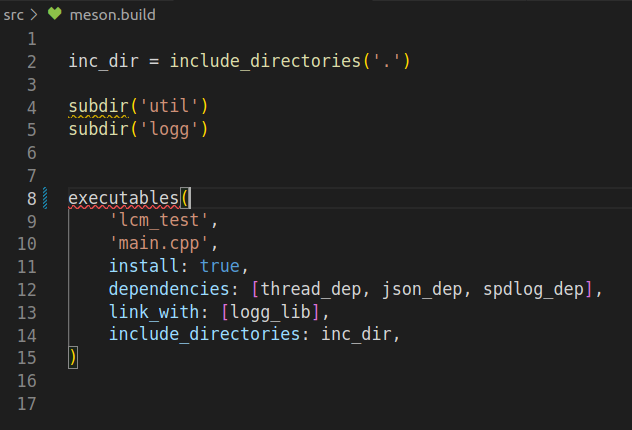

No requirement to use Visual Studio Code
It is not necessary to use Visual Studio Code for development, any editor can be used. What is, however, important is that clang-tidy and clang-format are used. These can be used from the command line or integrated with another development environment.
Introduction to Visual Studio Code
Visual Studio Code, also commonly referred to as VS Code is a source-code editor made by Microsoft with the Electron Framework, for Windows, Linux, and macOS. Features include support for debugging, syntax highlighting, intelligent code completion, snippets, code refactoring, and embedded Git. Users can change the theme, keyboard shortcuts, and preferences, and install extensions that add additional functionality.
In the Stack Overflow 2021 Developer Survey, Visual Studio Code was ranked the most popular developer environment tool among 82,000 respondents, with 70% reporting that they use it.
Visual Studio Code is based on Electron. Electron is a runtime that allows you to create desktop applications with HTML5, CSS, and JavaScript. It’s an open-source project started by Cheng Zhao (aka zcbenz), an engineer at GitHub. Electron combines the Chromium Content Module and Node.js runtimes. It allows developers to build GUIs with web pages as well as access native operating system capabilities on Windows, macOS, and Linux through an OS-agnostic API.
Extensions
To work effectively with VS Code and the project toolchain, a set of extensions need to be installed.
- C/C++ for Visual Studio Code (Microsoft)
- C++ TestMate (Mate Pek)
- Meson for VisualStudio Code (mesonbuild()
Note that there exists a plethora of VS Code extensions, often with similar names and purposes. Make sure that the author is the correct one from the list.
With these extensions it is possible to perform several tasks:
- build the project with meson
- debug both the application and individual tests
- run the tests from the test explorer
- the code is formatted according to the clang-format settings.
- the code is analyzed with the clang-tidy
All the configuration for this is included in the .vscode folder. Note that Grammarly is an extension to check spelling and grammar. It is not needed for development but has been used for writing this text.
C/C++ for Visual Studio Code
The C/C++ for Visual Studio Code is an official Microsoft extension for C/C++ development. It supports the use of Clang-Format and Clang-Tidy. It provides also support for debugging the code. This is configured in the launch.json file.
C++ TestMate
The C++ TestMate provides testing support. It will find the Google Test unit tests and show them in the test explorer. The configuration in tasks.json file will build the project before running the tests. This makes it easy to do some coding and then execute the tests.

Meson for VisualStudio Code
The Meson for VisualStudio Code extension is an official mesonbuild extension from the mesonbuild team. It makes it easy to write meson.build files and build the project.
To have full support the muon tool needs to be installed. The package called muon is a different tool. It needs to be manually installed.
pushd /tmp https://git.sr.ht/~lattis/muon cd muon meson setup builddir meson compile -C builddir meson test -C builddir sudo meson install -C builddir popd
The meson.build files will be checked, and warnings and errors will be visible in the editor. 
Code snippets
Visual Studio Code supports code snippets. A code snippet to generate the C++ include guard is defined in the snippet file. It makes it possible to in a header file start to write #ifndef and expand it to an include guard.